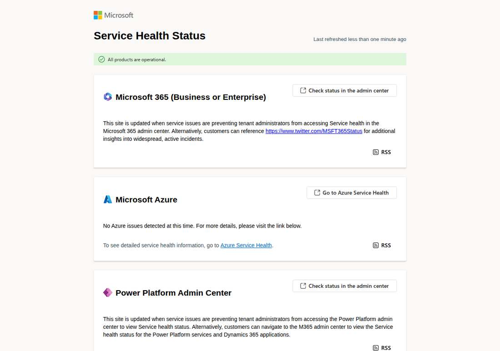

Microsoft 365 Outage Traced to Hidden Windows Defect in July Gateway Fix; Final Report Due November 20
Update to flashes 331 through 354, 359 and 360: Microsoft has published its preliminary Post-Incident Report, dated November 15, 2026, for the Microsoft 365 outage of November 12 to 13. The report, read in full through Office-Watch's verbatim reproduction and confirmed by Cyber Security News (published November 16, 08:04 UTC), names three factors: a latent lock-contention defect from a July fix prepared only for the Microsoft 365 networking gateway servers, a Teams failover onto the primary gateway about fifteen hours before the outage, and nearly 14 percent of gateway capacity out of service from an unrelated prior-day issue. The cascade took more than 80 percent of servers unresponsive in under two hours; the incident window is revised to 16:20 UTC on November 12 to 16:10 UTC on November 13. A final report is due within five business days, reported as November 20.
- 01THE REPORT — Microsoft has published its preliminary Post-Incident Report, dated November 15, 2026, for the Microsoft 365 outage of November 12 to 13. The report names three factors: a latent lock-contention defect from a July fix prepared specifically for the Microsoft 365 networking gateway servers, a Teams failover onto the primary gateway about fifteen hours before the outage, and nearly 14 percent of gateway capacity out of service from an unrelated prior-day issue.
- 02THE CASCADE — The defect ran worldwide for more than three months without visible problems because lab testing used weaker hardware with fewer cores, while the contention worsens on newer, many-core machines. When servers failed, automated traffic management moved users to healthy endpoints that then hit the same defect, and the failure cascaded across regions in under two hours until more than 80 percent of servers were unresponsive. The partition bulkheads that should have contained the failure did not, for a reason Microsoft has not yet explained.
- 03THE WATCHPOINT — The final post-incident report is due within five business days of full resolution, reported as November 20. It must answer why the bulkheads failed, what took nearly 14 percent of gateway capacity offline the day before, and what long-term fixes Microsoft commits to. No mail was lost and no tenant action is needed; the defect applies only to Microsoft's gateway servers.
WHAT HAPPENEDWhat Happened
Microsoft has published its preliminary incident report for the Microsoft 365 outage of November 12 to 13, and the cause is not the network capacity upgrade named in the first updates. The report, dated November 15, 2026 and published to administrators through incident EX1550543, traces the outage to three factors that combined to take down the networking gateway fronting Exchange Online and many other Microsoft 365 services. The report also revises the incident start time from 10:05 UTC to 16:20 UTC on Thursday, November 12; the end time stands at 16:10 UTC on Friday, November 13.
The first factor is a latent defect in Windows itself, but only on Microsoft's gateway servers. A fix prepared specifically for the Microsoft 365 networking gateway servers began deploying in July and ran worldwide for more than three months without visible problems. Under certain load conditions the fix caused lock contention inside an internal Windows process, exhausting CPU and memory until servers stopped responding. Microsoft says neither the defect nor the fix applies to broader Windows deployments. Its lab testing never caught the problem because the labs used weaker hardware with fewer cores, while the contention worsens on machines with more cores and newer hardware.
The defect needed two more conditions to fire. About fifteen hours before the outage, Teams traffic failed over from an alternative gateway onto the primary gateway that also serves Exchange Online, a routine move that raised load and changed traffic patterns. At the same time, nearly 14 percent of gateway server capacity was out of service because of an unrelated issue from the previous day. Neither condition alone would have caused the outage, Microsoft says; together they pushed the gateway into the latent bug during the peak window of traffic in the United States. When servers failed, automated traffic management moved users to healthy endpoints, which then hit the same defect, and the failure cascaded across regions in under two hours until more than 80 percent of servers were unresponsive. The bulkheads between capacity partitions that should have contained the failure did not stop it, for a reason Microsoft has not yet explained. Recovery took until Friday afternoon because restarted servers were immediately overwhelmed by waiting traffic, and the months-old change could not be rolled back with the usual tools; engineers instead built an update returning the code to its earlier working state and applied it server group by server group from 7:20 AM UTC, restoring webmail worldwide by 2:17 PM UTC.
WHY IT MATTERSThe resilience machinery made the outage worse
Every system that was supposed to contain this failure did the opposite. Automatic failover moved traffic off dying servers onto healthy ones, and the healthy ones died the same way. The partition bulkheads that divide the gateway into isolated capacity units failed to hold the cascade inside one region, and Microsoft's report does not say why. The usual recovery tools were useless because the defective change was months old and outside the reach of rollback, flighting and feature flags. The outage is a case study in a failure mode the industry keeps rediscovering: the safety net assumes failures are independent, and a latent defect that travels with the traffic is not.
For the AI stack the exposure is the same as during the outage itself. Exchange Online cannot fail out of this gateway for scale reasons, so Copilot and the OpenAI and Anthropic Microsoft 365 connectors that depend on Exchange mail and calendar data were down with it. Teams, SharePoint and OneDrive could move eligible traffic away and recovered earlier. The report's bluntest line is structural: when the one front door jams, email stops for nearly everyone, and there is no second front door at Exchange's scale.
WHAT TO WATCHThe final report, due November 20
The final post-incident report is due within five business days of full resolution, which the reporting puts at November 20. The open questions it must answer are the ones the preliminary report leaves hanging: why the partition bulkheads failed to contain the cascade, what the unrelated fault was that took nearly 14 percent of gateway capacity offline the day before, and what long-term fixes Microsoft commits to beyond returning the code to its earlier state. Until then the revised start time, the lock-contention defect and the three-factor account are Microsoft's own preliminary findings, not independently verified root cause.
The report also settles two practical questions for customers. No mail was lost: Microsoft extended the delivery window so queued messages were not bounced, and outgoing desktop Outlook mail stayed in the Outbox until connections returned. And there is nothing for tenants to fix: the defect and the fix apply only to Microsoft's gateway servers, and Microsoft's published guidance says no tenant or device configuration changes are necessary.
SIGNAL JUDGMENT — ANALYSISThe safety net spread the failure; the final report must say why
Tokenta Signal's judgment: The preliminary report replaces a vague capacity-upgrade explanation with a precise and more uncomfortable one. A defect sat in production for three months because the labs tested weaker hardware than the fleet runs, and then every resilience mechanism, failover, traffic redirection and partition bulkheads, carried the failure further instead of containing it. Microsoft's account is credible on the mechanics and honest about what it does not yet explain. The final report due November 20 has to answer the containment question, because that is the difference between a bad day and a structural single point of failure.
WHAT REMAINS UNCERTAINWhat Remains Uncertain
EVIDENCEEvidence

Microsoft's preliminary Post-Incident Report for the Microsoft 365 outage, dated November 15, 2026, reproduced in full by Office-Watch from the report published to administrators through incident EX1550543. The report states the incident ran from 4:20 PM UTC on Thursday, November 12 to 4:10 PM UTC on Friday, November 13, 2026, and names three factors: a latent lock-contention defect from a July fix prepared specifically for the Microsoft 365 networking gateway servers, a Teams traffic failover onto the primary gateway about fifteen hours before the outage, and nearly 14 percent of gateway server capacity out of service from an unrelated prior-day issue. At its worst more than 80 percent of servers were unresponsive, and a final report is due within five business days. Cyber Security News' report on the same document, published November 16 at 08:04 UTC, confirms the same root cause, timeline and scope.
PRIMARY SOURCESPrimary Sources
- Microsoft Preliminary Post-Incident Report (via Office-Watch): Microsoft 365 outage explained
https://office-watch.com/2026/microsoft-365-outage-explained/ - Cyber Security News: Microsoft reveals how a hidden Windows bug took down Microsoft 365 services worldwide
https://cybersecuritynews.com/microsoft-outage-incident-report/ - Microsoft Service Health: Microsoft 365 outage status
https://status.cloud.microsoft
RELATEDRelated Intelligence
- Microsoft Unveils MAI Code 2, Its In-House Coding Models, in GitHub Copilot
- Microsoft Ignite 2026: Copilot Goes GA, Autopilot Rolls Out, Salesforce Joins In
- US Chip Curbs Freeze a $480M Loan for Nvidia Chips Bound for ByteDance
- Grok Bot Reached for Corporate Data 31 Times Unasked, Then Said It Had Not